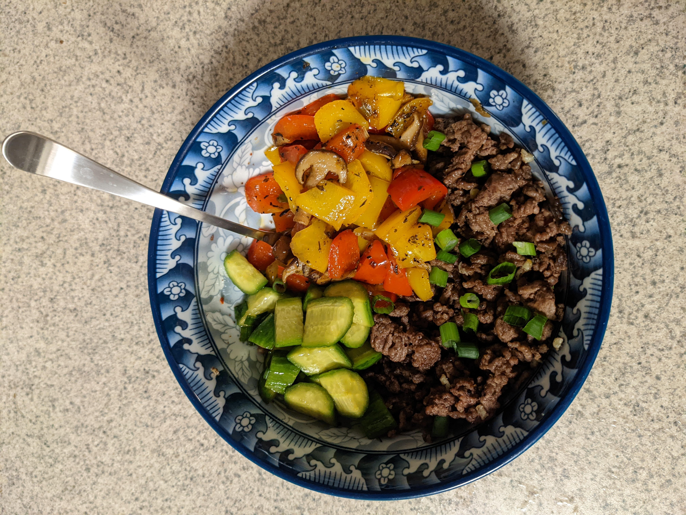

Beef Bowl with Shiitake Mushrooms and Bell Peppers

Description
Easy dinner recipe for two people. Gluten free, low carb.
Cook time: 40 min.
Ingredients
- 500 g of ground beef
- 200 g of Shiitake mushrooms
- 2 Bell peppers
- 1 tablespoon of Ginger root
- 2 Garlic cloves
- 4 Cucumbers
- 1-2 Scallions
- 2 tablespoons of Soy sauce
- 3 tablespoon of Avocado oil
- 1 teaspoon of White vinegar
- 1 teasspoon of Toasted sesame oil
- 2 teaspoons of Thyme (or rosemary)
- Black Pepper and Salt
Steps
- Cut mushrooms into bite sized pieces
- Chop ginger root and garlic
- Heat up 1 tbsp of avocado oil on the skillet. Add beef and saute for 10-12 min or untill cooked through. In the last 2 mins add ginger, garlic, salt, black pepper, thyme. Put beef aside in a warm spot
- Caut scallions and bell peppers
- Add 1 tbsp of avocado oil to the same skillet where you just cooked beef. Saute for 12 mins. Add soy sauce, thyme, salt, and black pepper in the last 2 mins.
- Add bellpeppers to shiitake mushrooms. Also add extra salt, pepper, thyme and avocado oil if needed. Cook for extra 8-10 mins
- While mushrooms and peppers cook, cut cucumbers into bite sized pieces and marinade them with vinegar, salt, soy sauce, and sesame oil
- Once everything's ready, devide between two plates keeping three parts of the dish separately
Enjoy!